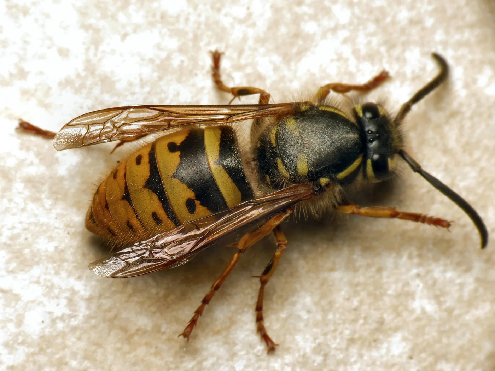
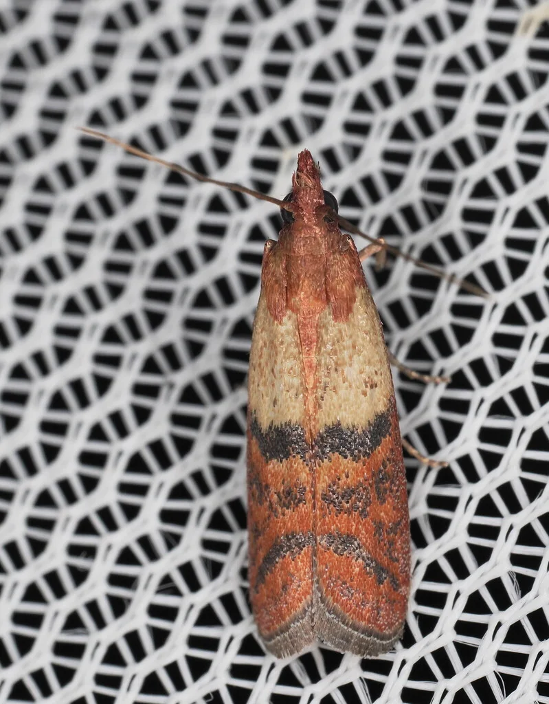
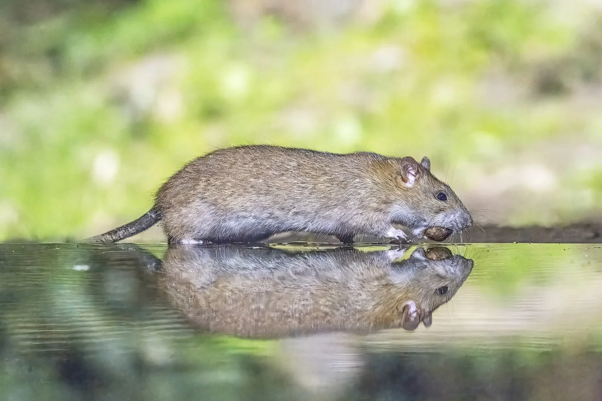
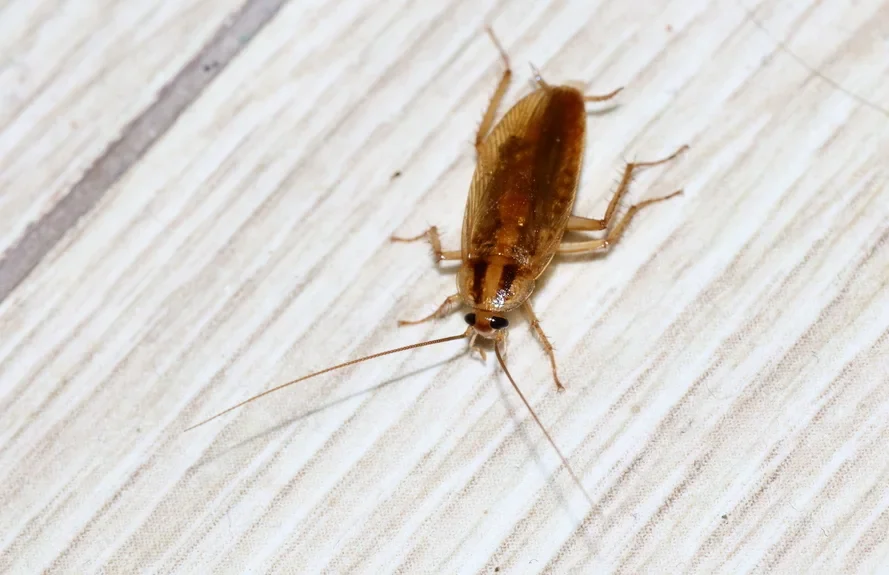

Kilder, foto og lisenser
Alt vi bruker som andre har laget, er brukt i tråd med lisensen og kreditert her og der det vises.
Artsfoto
Bildene av navngitte arter er ekte fotografier fra Wikimedia Commons og iNaturalist. Vi bruker bare bilder med lisenser som tillater kommersiell bruk: CC0 (ingen rettigheter forbeholdt), CC BY (kreditering) og CC BY-SA (kreditering, del på samme vilkår). Bilder med «ikke-kommersiell» (NC) eller «ingen bearbeidelse» (ND) brukes ikke. Bildene er skalert, og noen er beskåret slik at dyret fyller bildet. Beskårne versjoner av CC BY-SA-bilder deles videre under samme lisens som originalen.
| Art | Fotograf | Lisens | Original | Endring | |
|---|---|---|---|---|---|
 |
Husmus Mus musculus | Dion Art | CC BY-SA 4.0 | Wikimedia Commons | Beskåret |
 |
Skogmus Apodemus sylvaticus | Hans Hillewaert | CC BY-SA 3.0 | Wikimedia Commons | Skalert |
 |
Veggedyr Cimex lectularius | Gilles San Martin | CC BY-SA 4.0 | iNaturalist | Skalert |
 |
Svaletege Oeciacus hirundinis | Gilles San Martin | CC BY-SA 4.0 | iNaturalist | Skalert |
 |
Skjeggkre Ctenolepisma longicaudatum | Bj.schoenmakers | CC0 | Wikimedia Commons | Skalert |
 |
Sølvkre Lepisma saccharinum | Christian Fischer | CC BY-SA 3.0 | Wikimedia Commons | Skalert |
 |
Stikkeveps Vespula vulgaris | Martin Cooper from Ipswich, UK | CC BY 2.0 | Wikimedia Commons | Skalert |
 |
Kjempetreveps Urocerus gigas | Holger Gröschl | CC BY-SA 2.0 de | Wikimedia Commons | Beskåret |
 |
Rød skogsmaur Formica rufa | iNaturalist-bruker | CC0 | iNaturalist | Skalert |
 |
Melsmalmott (melmøll) Plodia interpunctella | Rosario Douglas | CC BY 4.0 | iNaturalist | Skalert |
 |
Skogflått Ixodes ricinus | W.alter | CC BY-SA 4.0 | Wikimedia Commons | Beskåret |
 |
Brunrotte Rattus norvegicus | Michael Palmer | CC BY-SA 4.0 | Wikimedia Commons | Beskåret |
 |
Stokkmaur Camponotus herculeanus | iNaturalist-bruker | CC0 | iNaturalist | Beskåret |
 |
Svart jordmaur Lasius niger | Joss Carr | CC BY 4.0 | iNaturalist | Skalert |
 |
Tysk kakerlakk Blattella germanica | iNaturalist-bruker | CC0 | iNaturalist | Beskåret |
,_%D0%9C%D0%BE%D1%81%D0%BA%D0%B2%D0%B0.jpg){kind=link}
.jpg){kind=link}
,_Mook,_the_Netherlands.JPG){kind=link}

_vulgaris)_(8655496146).jpg){kind=link}


Illustrasjonsbilder
Stemningsbilder i artikler, på forsiden og i regionene er generert med kunstig intelligens (Cloudflare Workers AI / FLUX og Google Gemini) og viser ikke virkelige steder eller personer. De brukes aldri for å vise hvordan en bestemt art ser ut.
Data og fagkilder
- Fagstoff: Folkehelseinstituttets skadedyrhåndbok. Artikler og faktabokser lenker til kildesiden.
- Skadedyrstatistikk: FHI Statistikk.
- Vær: Data fra MET Norge (CC BY 4.0), reserve: Open-Meteo.com (CC BY 4.0).
- Kart: fylkesgrenser fra Kartverket via robhop/fylker-og-kommuner (CC BY 4.0), forenklet.
- Produktbilder og -navn: Skadedyrbutikken.
- Skrifter: Instrument Serif og Schibsted Grotesk (SIL Open Font License).